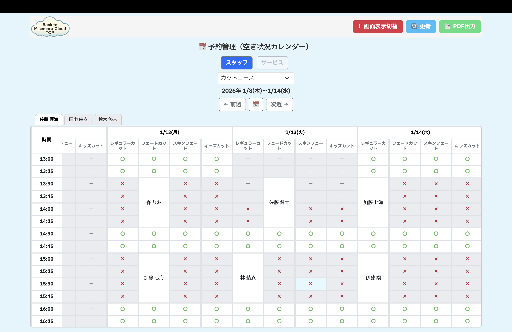
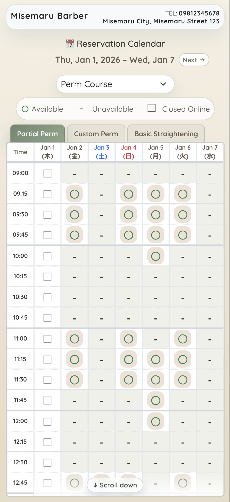

制作プロダクト 01
misemaru.cloud小規模店舗向け予約・運営支援
みせまるクラウド
予約受付だけで終わらせず、スタッフ・顧客・営業時間・通知まで。店舗の日々の運営を、ひとつの仕組みで支えます。
解決したかったこと
高機能すぎるシステムや複雑な初期設定に頼らず、小規模店舗が現場で無理なく使い続けられる予約環境をつくる。
- 01予約・変更・キャンセルと競合判定
- 02スタッフ・顧客・シフト・店舗設定
- 035言語表示とメール・予約前日のリマインド通知
- 04店舗作成・更新・運用サポート
店舗向け予約管理

お客様向け予約カレンダー
